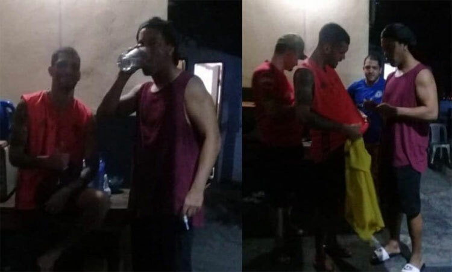
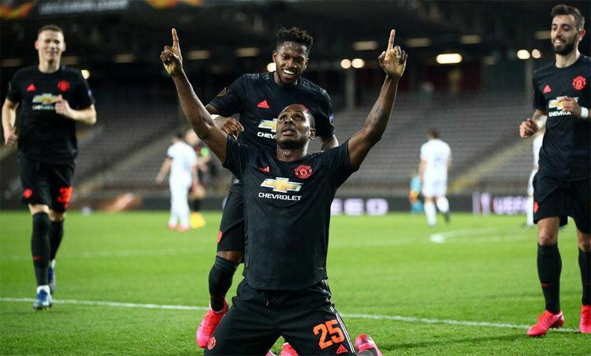
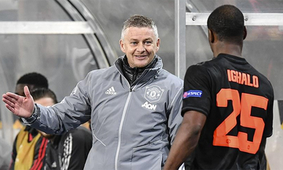
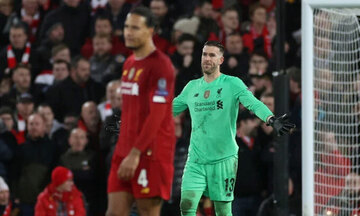
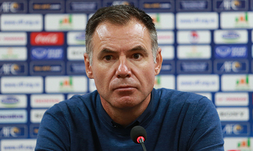

|  | Cựu cầu thủ hay nhất thế giới Ronaldinho bắt đầu chấp nhận đồ ăn và giao lưu với những tù nhân khác. |
|  | CĐV Man Utd thích thú với tuyệt phẩm bàn thắng mà tân binh Odion Ighalo ghi vào lưới LASK ở lượt đi vòng 1/8 Europa League tối 12/3. |
|  | HLV Ole Gunnar Solskjaer khen ngợi các cầu thủ Man Utd sau trận thắng 5-0 trên sân LASK ở lượt đi vòng 1/8 Europa League hôm 12/3. |
|  | Thủ môn Adrian phải hứng thịnh nộ sau khi mắc lỗi khiến Liverpool bị Atletico Madrid loại ở vòng 1/8 Champions League. |
|  | Ông Anthony Milicic thừa nhận thoáng bất an trong trận Australia thắng Việt Nam 2-1 ở lượt về vòng play-off Olympic 2020 tối 11/3. |